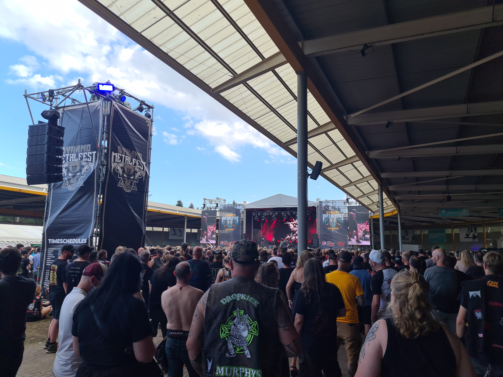
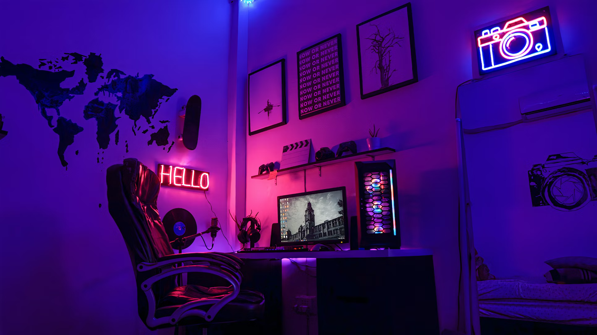

Concerten / muziekliefhebber
Als sinds jongs af aan hou ik van muziek. Toen ik tien jaar oud was hoorde ik het liedje "In Between" van de band Beartooth. Dit liedje was het eerste soort lied dat ik ooit hoorden dat binnen het metal genre thuis hoorden. Sinds dien ben ik naar meer metal gerelateerde muziek gaan luisteren. Mijn liefde voor het genre groeide alleen maar meer en meer door de jaren.
Metalcore
Metalcore is het genre waar ik het meeste naar luister. Metalcore is een krachtig en dynamisch muziekgenre dat zijn wortels heeft in de late jaren 1990. Het is ontstaan als een fusie van heavy metal en hardcore punk, waarbij elementen van beide stijlen werden gecombineerd om een nieuw geluid te creëren dat zowel agressief als emotioneel geladen is. Metalcore heeft sindsdien een trouwe en toegewijde fanbase opgebouwd en heeft zich ontwikkeld tot een van de meest invloedrijke en populaire subgenres binnen de bredere metalgemeenschap.
Een kenmerkend aspect van metalcore is de balans tussen intense, schreeuwende vocalen en melodische zangpartijen. Dit biedt luisteraars een breed scala aan emotionele uitdrukkingen, variërend van woede en frustratie tot verdriet en hoop. De teksten van metalcore-nummers gaan vaak over persoonlijke strijd, innerlijke demonen en de zoektocht naar verlossing. Het genre dient als een uitlaatklep voor zowel de muzikanten als de luisteraars om hun emoties en ervaringen te uiten.
Ik ga nu al een paar jaar naar optredens / festivals van bands binnen(en buiten) dit genre. De eerste band die ik ooit live gezien heb is Ice Nine Kills. Het eerste festival waar ik heen ben gegaan is Jera On Air. "Jera On Air" is een opwindend muziekfestival in Nederland dat bekend staat om zijn geweldige line-up van punk, hardcore en rockbands. Het trekt jaarlijks duizenden muziekliefhebbers die samenkomen om te genieten van krachtige optredens, een geweldige sfeer en onvergetelijke herinneringen. Het festival is een must-visit voor degenen die houden van luide gitaren en energieke live-optredens.
Gamen

Ik speel al games sinds zover ik me kan herrineren. De eerste game die ik ooit speelde was Super Mario Bros DS, sinds dien ben ik games blijven spelen. Multiplayer en singleplayer.
Een van de spellen die me steeds weer terugbrengt, is Overwatch 2. De intense teamgevechten, de kleurrijke personages en de strategische diepgang van het spel maken het een constante bron van opwinding. Het voelt alsof ik deel uitmaak van een elite team dat samenwerkt om de wereld te redden, en dat gevoel van gemeenschap is gewoon geweldig.
Pokémon heeft een speciaal plekje in mijn hart vanwege de nostalgische waarde. Als kind bracht ik uren door met het vangen en trainen van deze wezens, en ik ben blij te zien hoe de franchise zich blijft ontwikkelen en vernieuwen.
Call of Duty: Black Ops III was de eerste shooter game die ik ooit speelde, ik kreeg de game samen met mijn playstation 4 voor kerstmis in 2015. Sinds dien ben ik een grote fan geworden van de Call of Duty gameseries. Voorral van het zombie gedeelte van Black Ops. Een kenmerk van de modus is het verzamelen van punten door het neerhalen van zombies, waarmee spelers toegang krijgen tot wapens, power-ups en het openen van nieuwe gebieden op de kaart. Samenwerking is essentieel om te overleven, en teamwerk wordt aangemoedigd omdat spelers elkaar kunnen helpen bij het herstellen van gewonde teamgenoten en het activeren van speciale vaardigheden.
Top 10 favoriete games
| Game | Genre |
|---|---|
| Overwatch | First Person Shooter |
| Call of Duty: Black Ops III | First Person Shooter |
| Pokémon Black 2 | RPG |
| Persona 5 Royal | RPG |
| Spider-Man | Action-adventure |
| Super Mario Odyssey | Platformspel |
| Fortnite | Battle Royale |
| Infamous: Second Son | Action-adventure |
| Doom Eternal | First Person Shooter |
| Spider-Man: Miles Morales | Action-adventure |